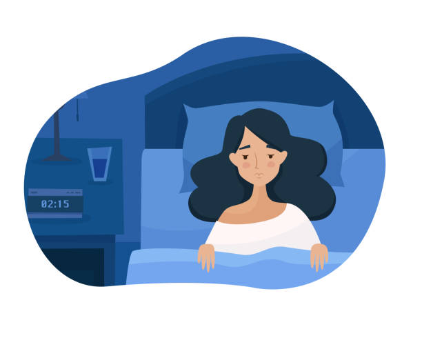

Growing Into Sleep Loss

- Lack of Sleep
- Elementary school children lose increasingly more sleep as they move from the 2nd to the 6th grade, until drowsiness routinely interferes with older children's ability to pay attention and learn.
- At low levels of sleep debt, a person's alertness and ability to respond to situations diminishes. It can damage memory, and make even the simplest tasks more challenging. Students use more energy staying awake than paying attention in class.
- The amount of sleep we need changes as we age:
- Newborn infant: 16 hours of sleep per day
- Age 2: 12 hours of sleep per day
- Age 6: 11 hours of sleep per day
- Age 18: 8.5 hours per night